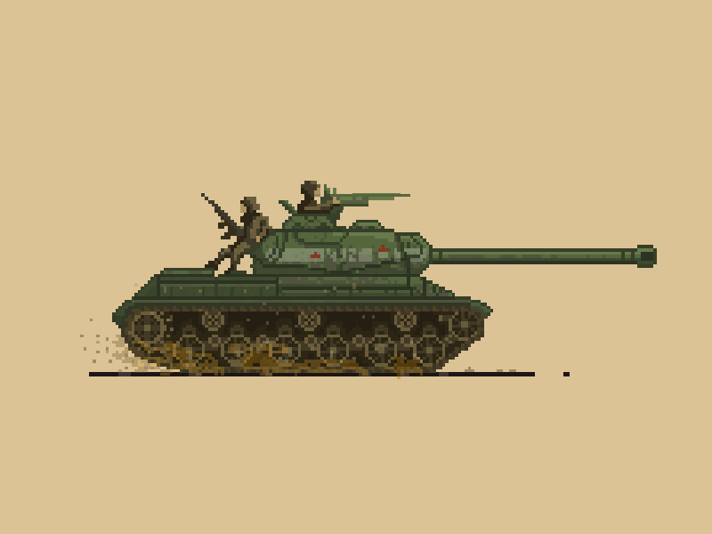

KV-1
![[Aquí va la imagen del KV-1]](./images/IS-2.jpg)
El KV-1 (Kliment Voroshilov 1) fue un carro de combate pesado soviético utilizado durante la Segunda Guerra Mundial. Diseñado para resistir los cañones antitanque enemigos, el KV-1 destacó por su grueso blindaje, aunque su movilidad y armamento presentaban limitaciones.
Origen y desarrollo
El KV-1 fue desarrollado a finales de la década de 1930 como respuesta a la necesidad de un tanque pesado capaz de resistir los cañones antitanque de la época. Entró en servicio en 1939 y jugó un papel importante durante las primeras etapas de la guerra, especialmente en la invasión alemana de la Unión Soviética en 1941.
Ventajas y desventajas
Ventajas:
Blindaje: Su grueso blindaje lo hacía casi invulnerable a los cañones antitanque alemanes al inicio de la guerra.
Resistencia: Era capaz de soportar múltiples impactos sin sufrir daños significativos.
Desventajas:
Movilidad: Su peso y motor limitado lo hacían lento y difícil de maniobrar.
Armamento: Aunque efectivo, su cañón de 76,2 mm era menos potente que los de los tanques enemigos más avanzados.
KV-1. 